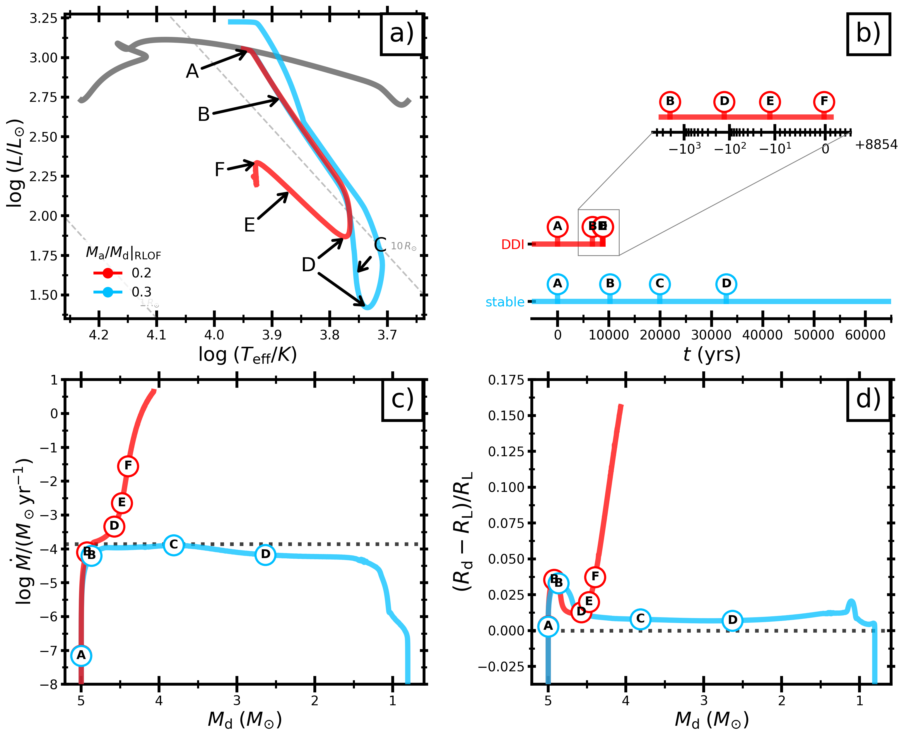

We model donor stars approaching a delayed mass-transfer instability and predict observable pre-instability behaviour.
The models suggest a long dimming phase followed by rapid brightening and heating, relevant to luminous red nova progenitors.